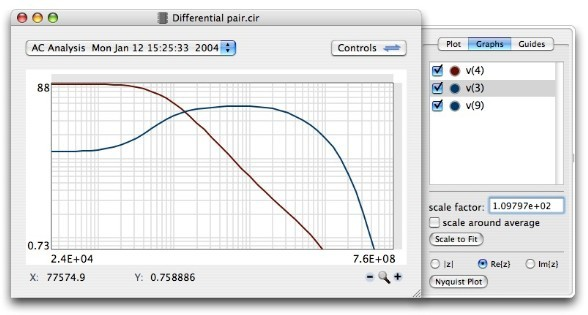
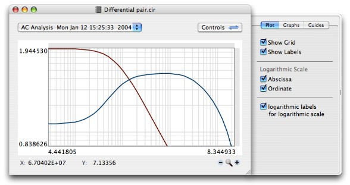
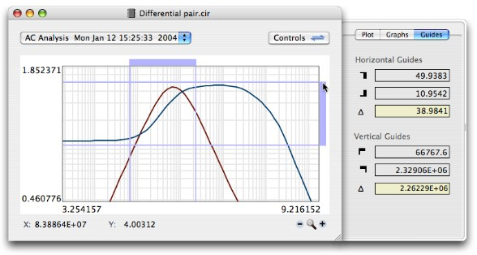

| Back |
Using the PlotterClick on the 'Plot' icon in the toolbar to open a plotter window which will show graphs of the variables found in the simulation results. If the simulation includes more than one analysis type then you can select the desired analysis by using the popup menu in the upper left corner of the plotter window. Typical analysis types are DC, AC and transient. When you move the pointer (mouse) around on the plotting area the values of the abscissa and of the ordinate at the visited point will be shown in the lower left corner. The abscissa value is designated 'X', and the ordinate value is 'Y'. You can copy the current plot to the system pasteboard by pressing Command-C. From there you can paste it into another application. You can also print the plot by pressing Command-P The plotter can be customized to some extend. You will find global options (applying to all plotter windows) in the preferences panel. Additionally, clicking on the Controls button in the plot window will reveal (or hide) options which change the appearance of the plot. The rest of this page explains the control options. The Graphs Panel  Hiding Variables: By default, all simulation variables are plotted. Usually this results in clutter and it becomes hard to concentrate on the tracked variable. You can selectively hide variables by deselecting the buttons on the left of each variable you want to hide. Changing Graph Colors: Clicking on the colored circle to the left of a variable's name opens a color dialog in which you can change the color of the graph. Tip: If you want to quickly change the colors of multiple variables then keep the color dialog open while selecting the next variable. Scaling: You can set the scale factor of each variable after selecting it in the list and entering the desired scale factor in the text field at the bottom of the drawer. The default scale of the plot is set so that the variable with the greatest ordinate values fits nicely. Other variables may have values which are orders of magnitude smaller and which make them vanish. By scaling them up you make those graphs appear. The button 'Scale to Fit' makes the graph fit into the plotting region, thereby providing you with a starting point for fine tuning the scale to suit your analysis. If the option 'scale around average' is selected, graphs will not move away from the abscissa but be scaled around their average value, which is useful if, for example, you have a graph of a nonzero DC value with a small AC signal on it and you just want to make the AC part more visible. Complex Values: If the values of an analysis variable are complex numbers then the magnitude is displayed by default. You can choose an alternative representation by selecting one of the small radio buttons, which are located at the bottom of the drawer. The symbols |z|, Re{z}, and Im{z} stand for the magnitudes, the real parts, and the imaginary parts of the values, respectively. You can also view the Nyquist plot of the variable by pressing the button Show Nyquist Plot. A separate window will open for the Nyquist plot. The dot in the Nyquist plot marks the starting point of the trace. The Plot Panel  Turning the grid on and off: Use the checkbox 'Show Grid' to turn the grid on or off. Turning labels on and off: Currently the labels only show the limit values of the ordinate and the abscissa. Use the checkbox 'Show Labels' to turn the labels on or off. Switching to logarithmic scale: Use the checkboxes to set the scale of each axis to linear mode (when deselected) or logarithmic mode (when selected). Note that logarithmic scaling of an axis is not possible if, in the current viewing region, the axis includes zero or negative values. In that case no grid is drawn for that axis. Zoom out and select a subregion with only positive values for the selected axis to view it in logarithmic scale. If you prefer the labels to display the logarithm of the maximum and minimum values whenever the corresponding axis is set to logarithmic scale, then check the button designated logarithmic labels for logarithmic scale. The Guides Panel  Guides can be used to measure positions and interval lengths.
There are two guides for marking positions along the abscissa,
and two guides for marking positions along the ordinate. The guides
are positioned by dragging the ends of the horizontal and vertical
bars on the right and the top of the plotting area. Guides appear
only when you click on a bar's end. The values for the current
positions are displayed in the associated fields in the Guides panel. Zoom-in operations are performed by first adjusting the guides so that they frame the region that you want to zoom into and then clicking on the plus sign in the lower right corner of the plot window. Clicking on the minus sign returns you to the previous view or, if you there is no history, zooms out by a factor of 5/3. Zooming only works if you have a donation key. Note, that, if one or both of the axes are set to logarithmic scale and a zoom-out operation is performed, which makes one of the limit values become negative (or zero) then the graphs will jump to infinity and the zoom bar will vanish. In that case switch to linear scale and adjust the zoom region so that the values in the new range are all positive again. |